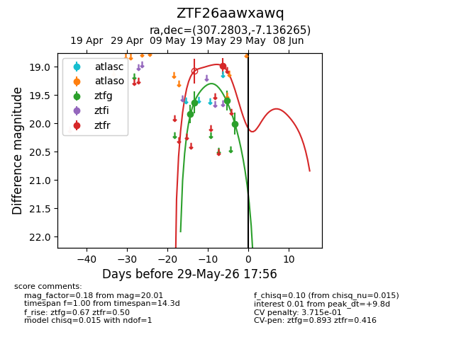
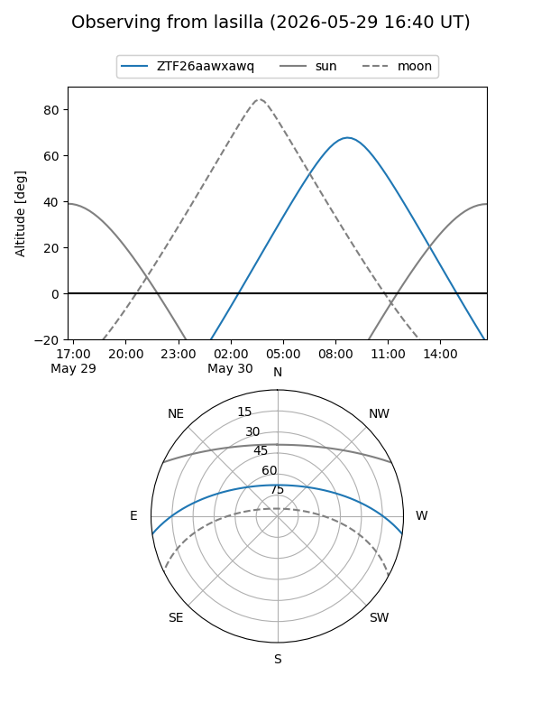
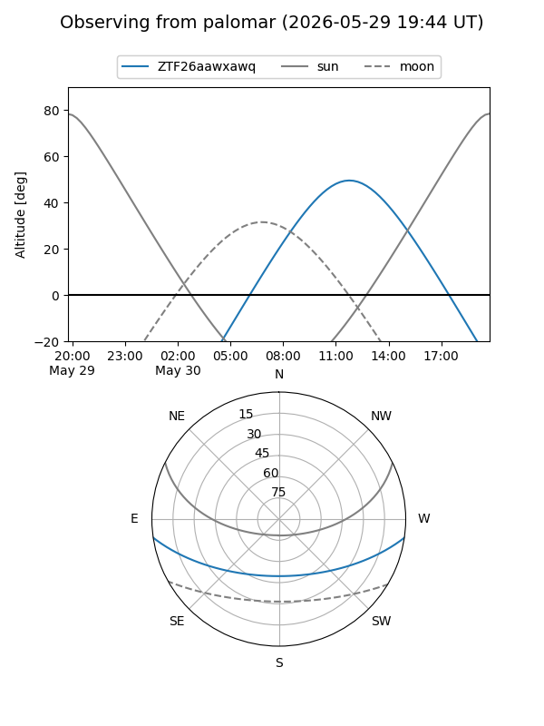
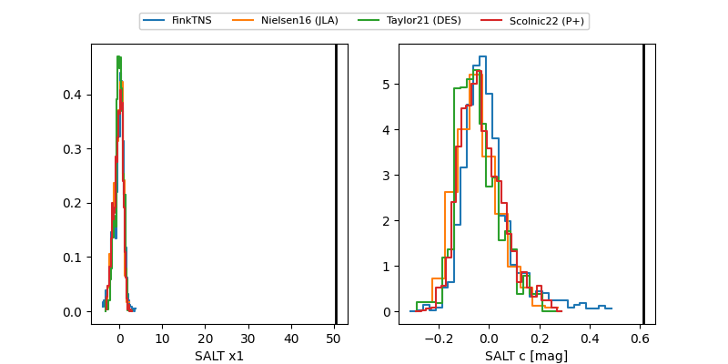

ZTF26aawxawq
Target ZTF26aawxawq at 2026-05-29 17:57
Aliases and brokers:
lsst-FINK: link
lsst-Lasair: link
lsst-ALeRCE: link
ztf-FINK: link
ztf-Lasair: link
ztf-ALeRCE: link
alt names
ZTF26aawxawq (ztf,fink_ztf)
Coordinates:
equatorial (ra, dec) = 307.2803,-7.13627
equatorial (HMS+DMS) = 20:29:07.27,-07:08:10.56
galactic (l, b) = (37.7715,-24.94503)
Flags:
likely cv: !
Photometry:
last ztfg=20.01, ztfr=18.99
4 ztfg, 1 ztfr detections
Lightcurve

Visibility


Additional plots
